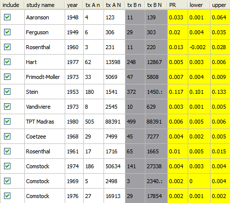

For two-arm studies with binary data, as shown in this example, the default metric for the effect size is the odds ratio (OR). To choose a different metric:
See Metric Options for a complete description of the available metrics.
When you select a metric, the effect sizes and confidence intervals in the yellow columns of the data table are immediately updated.
If you select a one-arm metric, only the columns labeled tx An and tx AN are included in the analysis, and the metric is only applied to those columns. The tx Bn and tx BN columns are shaded grey, as shown below.

 | Running the Analysis | Adding a Covariate |  |